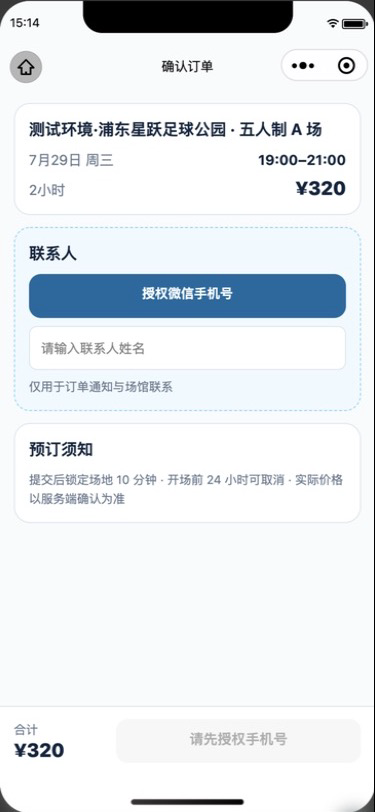
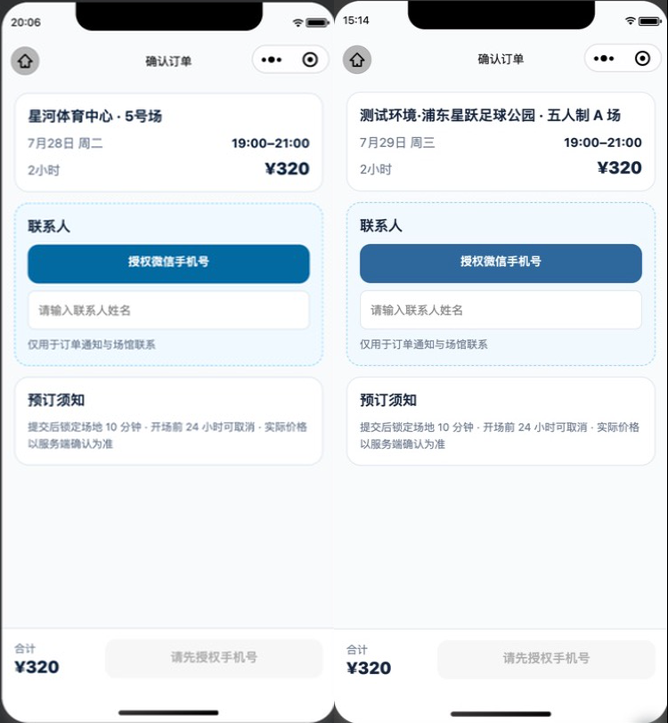
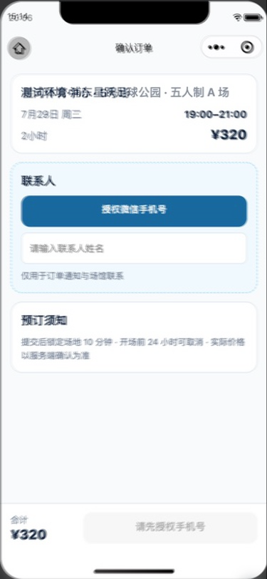
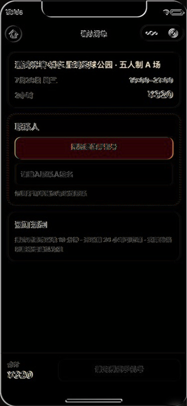

确认订单 · Development-HTTP 视觉验收
左侧基线是已批准的 Fixture 小程序实现，右侧是连接本地真实 API、数据库和开发登录后的同状态页面；两者均为 375 × 812。
用户已确认 · 2026-07-281. 已批准 Fixture 基线

2. 真实 HTTP 实现

3. 并排对比

4. 50% 叠加

5. 像素差异

左侧基线是已批准的 Fixture 小程序实现，右侧是连接本地真实 API、数据库和开发登录后的同状态页面；两者均为 375 × 812。
用户已确认 · 2026-07-28


